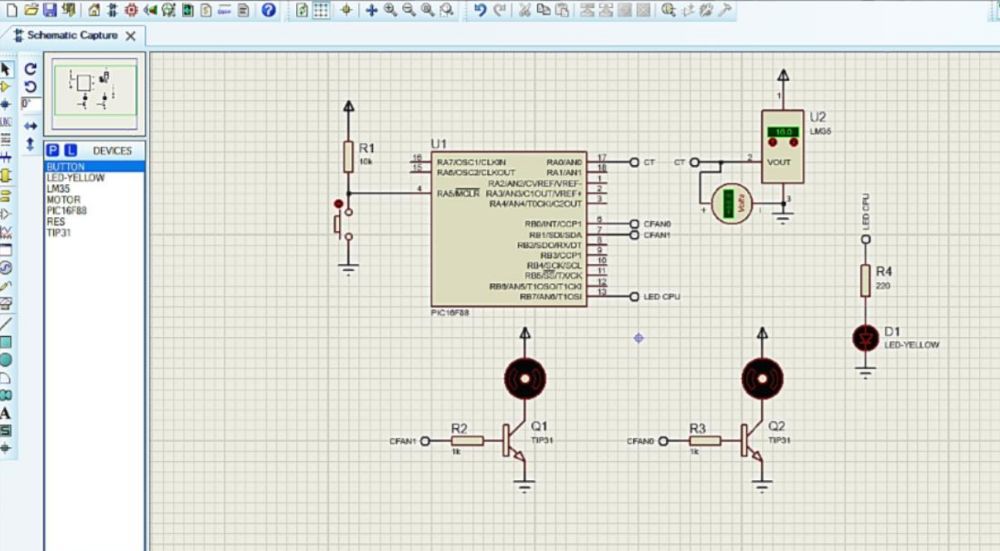

Résumé technique
- Technologies utilisées : Microcontrôleur PIC 16F88, langage C, capteur de température LM35, système de ventilation et de chauffage.
- Domaine d’application : Agriculture de précision.
- Objectif du projet : Assurer un contrôle optimal de la température afin de répondre aux besoins spécifiques des différentes espèces végétales.
Présentation du projet
Les serres représentent une technologie importante pour l'agriculture moderne.et cela en offrant des conditions climatiques idéal Ce projet a pour objectif de Concevoir un système de contrôle intelligent, combinant ventilation et chau age via microcontrôleur, pour maintenir des conditions optimales de culture des bananes en serre en Algérie
Les Défis
- Partie Matériel
- Le capteur LM35:
- La broche VIN : reliée avec l’alimentation.
- La broche VOUT : connectée avec la broche AN0 du microcontrôleur.
- La broche GND : reliée avec la masse.
- Le régulateur de tension L7805 :
- La broche INPUT : se relie avec la source d’alimentation extérieure et un condensateur.
- La broche OUTPUT : elle alimente le circuit, donc elle sera branchée avec le microcontrôleur, la led et les ventilateurs, ainsi qu'à un condensateur.
- La broche GROUND : connectée avec la masse.
- le PIC 16F88 :
- Un bouton poussoir configuré en mode pull-up est connecté avec la broche MCLR du pic16f88, afin de pouvoir réinitialiser manuellement le microcontrôleur en cas de bug.
- un condensateur de découplage entre la broche VSS et la broche VDD du microcontrôleur pour assurer la stabilité et la clarté du signal.
- Le TIP31:
- La broche collecteur : se relie au Fil – du ventilateur
- La broche base : elle sera branchée avec le microcontrôleur.
- La broche émetteur : connectée avec la masse.

Le projet est constitué des composant suivant :
Un capteur de température analogique nécessite une alimentation régulée et stable.
Le Branchement:
Conçu pour fournir une tension de sortie régulée et constante de 5V à partir d'une source d'alimentation non régulée
Le Branchement:
Un microcontrôleur pour le traitement des données
Le Branchement:
Un transistor bipolaire NPN de puissance moyenne qui peut agir comme un interrupteur commandé
Le Branchement:

Explication du programme
- La déclaration et l’initialisation des variables
- Configuration de l’oscillateur interne du microcontrôleur pour une fréquence d’horloge de 4MHZ
- Initialisation du convertisseur ADC:convertir la valeur donnée par l’ADC en tension selon la formule suivante :
- Valeur_analogique:valeur lue à partir du CAN "valeur analogique= ADC_Read(0)"
- Résolution_CAN :le niveaux de quantification disponibles pour la conversion "résolution de 10 bits donc 1024 niveaux".
- Plage_de_tension :de "0 à 5 volts".
- Conversion de la tension analogique en une valeur de température en degrés Celsius.
- Les conditions:
- la température > 28°: CFAN1 s’allume
- la température < 16°: CFAN0 s’allume
- 16°< la température > 28°:aucun ventilateur ne va s’allumer
Tension = (Valeur_analogique / Résolution_CAN) * Plage_de_tension
"1 degré correspond à 10 mV (0.010V)"
Les Résultats:
- Test sur lab d'essai
- Réalisation de la carte final
- L’intégration d’autres capteurs (humidité, luminosité, CO₂)
- Alimentation du système avec panneaux solaires
- Développement d’une interface utilisateur (LCD ou appli)
- Miniaturisation et optimisation du PCB pour la production